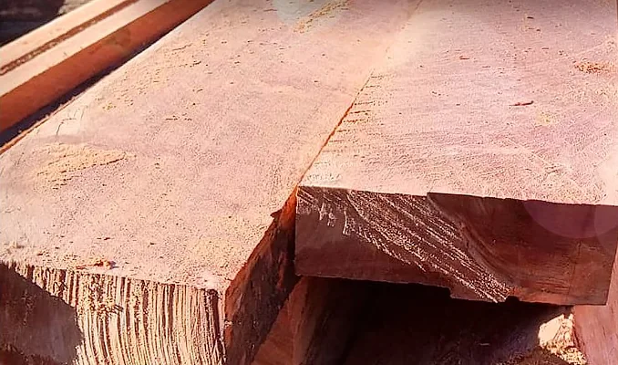
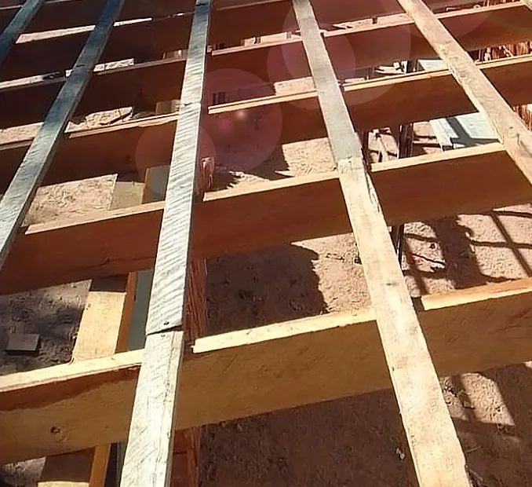
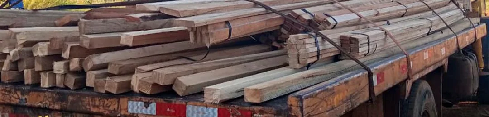
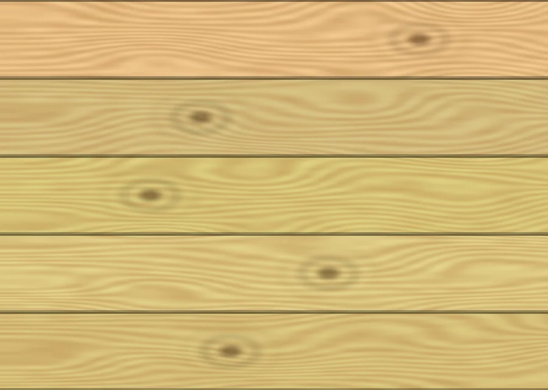
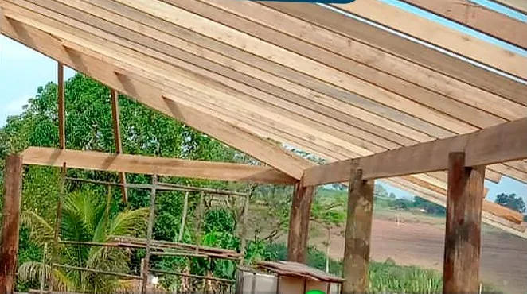
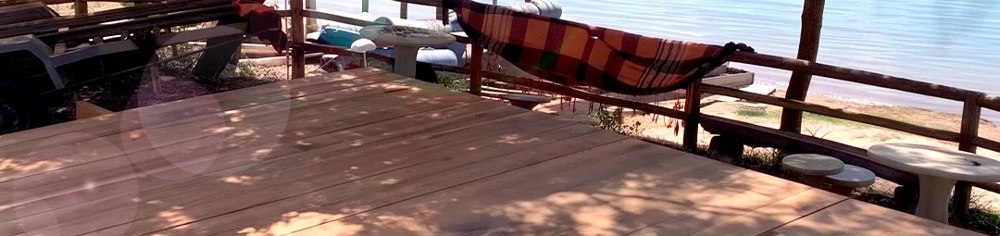
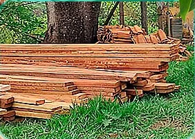
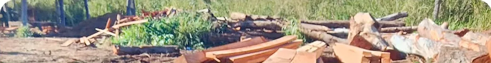
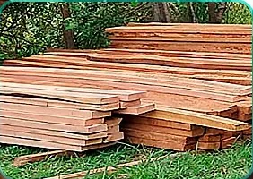

Eucalipto
O eucalipto é utilizado em diferentes aplicações na construção, em estruturas e em projetos rurais, conforme as características e especificações de cada peça.
Consultar eucaliptoEucalipto e pinus para diferentes necessidades, com qualidade e entrega para toda a região de Franca.



Materiais para diferentes aplicações, com atendimento direcionado às necessidades de cada projeto.
O eucalipto é utilizado em diferentes aplicações na construção, em estruturas e em projetos rurais, conforme as características e especificações de cada peça.
Consultar eucalipto
Imagem ilustrativaO pinus pode ser utilizado em diferentes projetos de construção, marcenaria e outras aplicações, de acordo com o tipo de peça e suas características.
Consultar pinusExemplos de uso dos materiais. A disponibilidade e a adequação de cada peça dependem das especificações — consulte a equipe.

Telhados, coberturas e estruturas de apoio, com orientação sobre o uso adequado da madeira.

Deck flutuante feito com tábuas de eucalipto 3x10, em obra à beira d'água.

Madeira serrada para benfeitorias e estruturas no campo, conforme a especificação.
Peças que ganham forma nas mãos de artesãos e marceneiros parceiros.
A Reflorestal é uma serraria e madeireira localizada na região de Franca, São Paulo, que trabalha com eucalipto e pinus. A empresa destaca a qualidade de seus materiais e oferece entrega para toda a região. Entre em contato para conhecer as opções disponíveis e solicitar um orçamento para seu projeto.
Eucalipto de reflorestamento, para quem procura qualidade, resistência e confiança na hora de construir.


Opções de madeira para diferentes necessidades e aplicações.
Materiais apresentados com atenção às necessidades de cada projeto.
Entrega para toda a região, conforme disponibilidade e condições a consultar.
Entre em contato para consultar materiais, especificações e condições de fornecimento.
Registros de materiais e trabalhos divulgados pela Reflorestal.
A Reflorestal está localizada na Rodovia Prefeito Fábio Talarico, km 36, em Franca – SP, e informa que realiza entregas para toda a região. Entre em contato para consultar a disponibilidade dos materiais e as condições de entrega para sua localidade.
Rodovia Prefeito Fábio Talarico, km 36Informe o que você precisa e consulte a equipe da Reflorestal sobre as opções de eucalipto, pinus, especificações e condições de entrega.
Acompanhe o perfil da Reflorestal para conhecer melhor a empresa e conferir as publicações sobre seus materiais e atividades.
A empresa informa que trabalha com eucalipto e pinus. Consulte a disponibilidade e as especificações das peças diretamente com a equipe.
Sim. A Reflorestal informa que realiza entregas para toda a região. Consulte as condições para sua localidade.
Entre em contato pelos canais oficiais da empresa — WhatsApp ou o formulário desta página — para informar o material desejado e consultar as condições de fornecimento.
A empresa está localizada na Rodovia Prefeito Fábio Talarico, km 36, em Franca – SP.
Entre em contato para verificar as especificações, medidas e disponibilidade dos materiais desejados.
Conheça as opções de eucalipto e pinus da Reflorestal e consulte as condições para atender à sua necessidade.